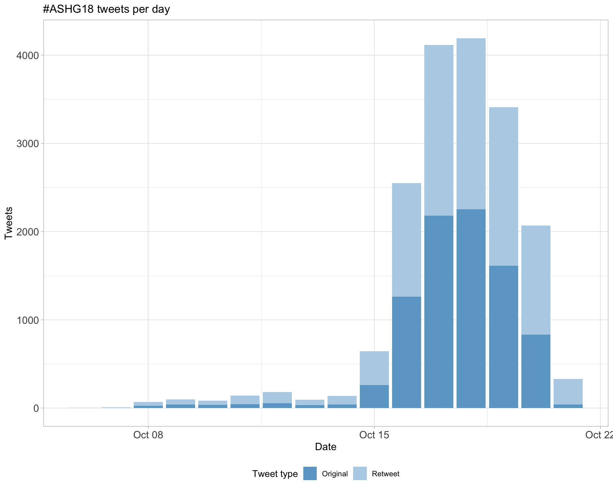
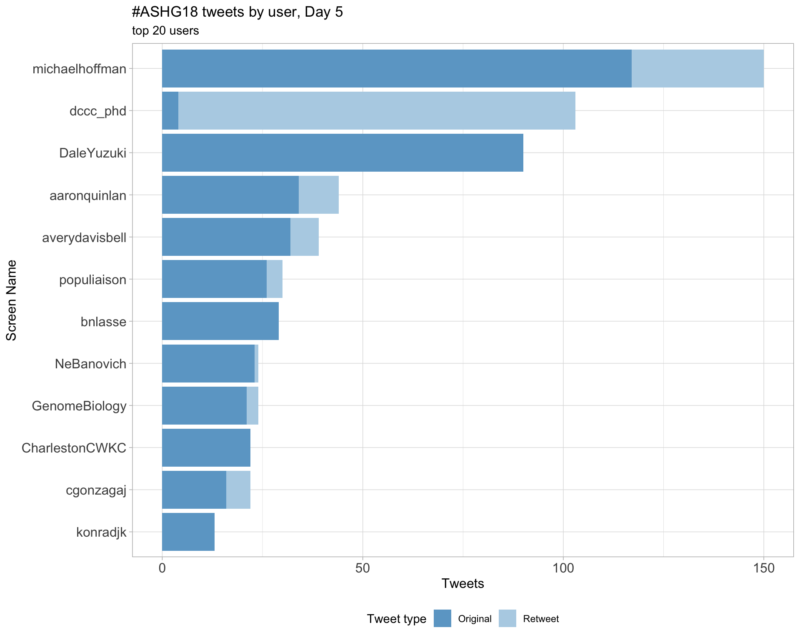
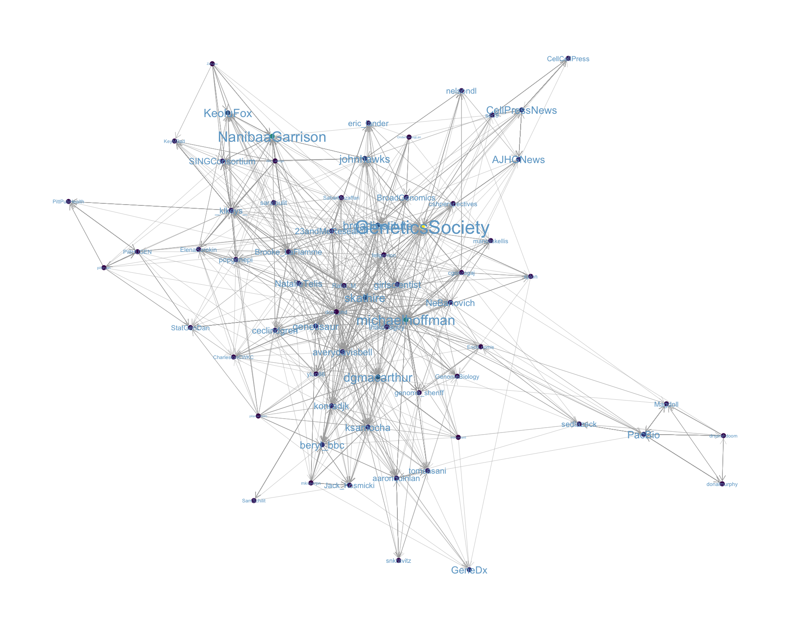
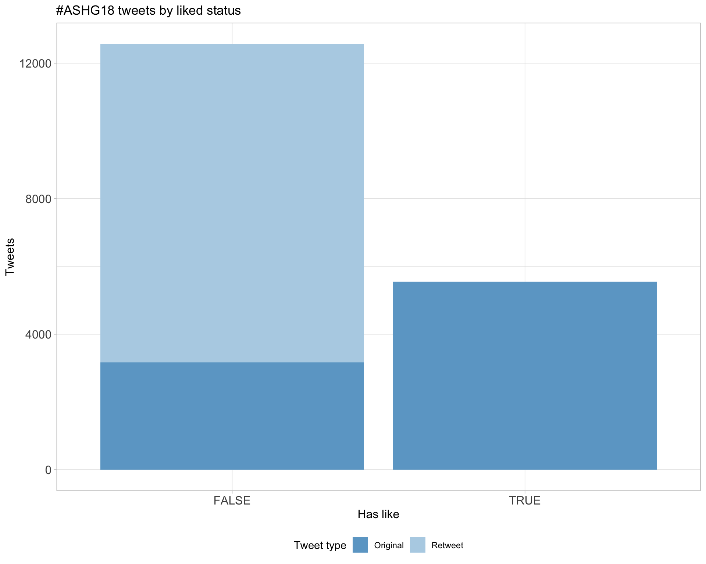
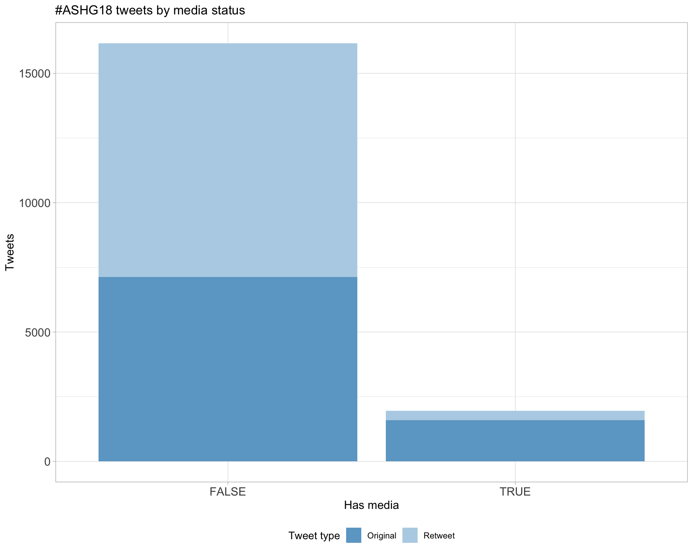
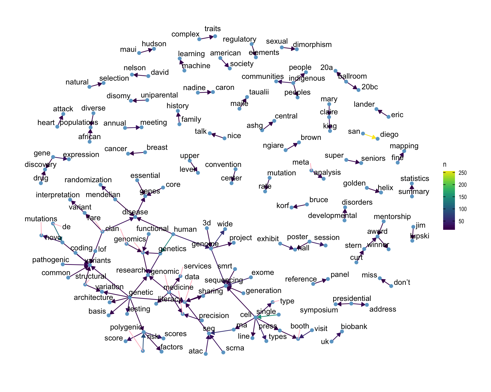

Twitter coverage of the American Society of Human Genetics 68th Annual Meeting
Luke Zappia
2018-10-17 12:36:18
Parameters
| Parameter | Value |
|---|---|
| Hashtag | #ASHG18 |
| Conference | American Society of Human Genetics 68th Annual Meeting |
| Time Zone | America/Los_Angeles |
| Days | c(“2018-10-16”, “2018-10-17”, “2018-10-18”, “2018-10-19”, “2018-10-20”) |
| Accent colour | skyblue3 |
| Pallete | Set1 |
| Topics k | 6 |
| Fixed | FALSE |
1 Introduction
An analysis of tweets from the American Society of Human Genetics 68th Annual Meeting conference. A total of 3612 tweets from 1482 users were collected using the rtweet R package.
2 Timeline
2.1 Tweets by day

2.2 Tweets by day and time
Filtered for dates 2018-10-16 - 2018-10-20 in the America/Los_Angeles timezone.

3 Users
3.1 Top tweeters

3.2 Top original tweeters

3.3 Retweet proportion

3.4 Top tweeters by time

3.5 Top tweeters by day
3.5.1 All tweets
Day 1

Day 2

Day 3

Day 4

Day 5

3.5.2 Original tweets
Day 1

Day 2

Day 3
Day 4

Day 5

3.6 Sources

4 Networks
4.1 Replies
The “replies network”, composed from users who reply directly to one another, coloured by page rank.

4.2 Mentions
The “mentions network”, where users mention other users in their tweets. Node colour, label size and alpha adjusted according to PageRank score.

5 Retweets
5.1 Retweet proportion

5.2 Retweet count

5.3 Top retweets
| screen_name | text | retweet_count |
|---|---|---|
| david_a_knowles | ML, functional genomics, RNA-splicing regulation or hi-throughput screens float your ⛵️? I have postdoc positions available in my shiny new lab at @nygenome / @Columbia. Lets chat at #ASHG18 or go to https://t.co/cY6qPVnhqb Please RT! | 51 |
| erlichya |
So what did we have this week in human genetics? * A Senator taking a DNA test to fight political opponents * Major parts of US can be under genetic surveillance via DTC tests * UKBB reports results for 500K people * Nature calls for PRS in clinic The revolution is here #ASHG18 |
49 |
| KeoluFox | Interested in Senator Warren‚Äôs DNA test? üòà Join @NanibaaGarrison and I, WED Oct 17th @ 10:30 am to discuss, ‚ÄúSilent Genomes: Indigenous-led Initiatives on Addressing Equity in Genomics Health Care and Research‚Äù We‚Äôll discuss tribal identity, genetics, and much MUCH more #ASHG18 https://t.co/dLICun72xC | 47 |
| heikorunz | On spot for #ASHG18 our ~700k participant study out in @NatureComms asking: Can meta-PheWAS across large biobanks (@uk_biobank, @23andMe, @FIMM_UH, @ChildrensPhila) facilitate decision-making during drug discovery? 1/n https://t.co/80HMiDWPPl | 39 |
| Hutton | GRC: “indefinite postponement of GRCh39”, instead will provide iterative improvements to GRCh38. “If you have been holding off on adoption of 38 and are instead waiting to jump to 39…please don’t!” #ASHG18 | 29 |
| IBJIYONGI | Tomorrow @KeoluFox and @NanibaaGarrison – two indigenous scientists – will be giving conference talks on genomes and identity, and the session will be livetweeted on the hashtags: #SilentGenomes #ASHG18 | 24 |
| michaelhoffman | Thanks to @GeneticsSociety for expanding the code of conduct for #ASHG18. Let’s make the meeting safe, productive, and fun! https://t.co/CLu84vonSD https://t.co/lT4bycqHxG | 23 |
| GeneticsSociety | “We must recognize the disruptive nature of our work…maintaining sensitivity to the nature of our work is important, but we must recognize what exciting work it is.” –@nelsondl at #ASHG18 presidential address https://t.co/begWoDEVhm | 23 |
| nicolesoranzo | An amazing opportunity to join the Human Genetics faculty at @sangerinstitute. @anderson_carl and I will be at #ASHG18, so please catch us if you want to discuss the position! | 22 |
| dermitzakis | Open positions for data analysts at Health 2030 Genome Center @swissgenomics for data analysis pipelines and post-docs at the Dermitzakis lab on the study of genetics of gene regulation, 3D genome interactions and cancer non-coding variants. Please e-mail or DM me #ASHG18 | 22 |
6 Favourites
6.1 Favourite proportion

6.2 Favourite count

6.3 Top favourites
| screen_name | text | favorite_count |
|---|---|---|
| erlichya |
So what did we have this week in human genetics? * A Senator taking a DNA test to fight political opponents * Major parts of US can be under genetic surveillance via DTC tests * UKBB reports results for 500K people * Nature calls for PRS in clinic The revolution is here #ASHG18 |
146 |
| skathire |
Arrive in SD for @GeneticsSociety #ASHG18 Cab driver a Greek Orthodox Palestinian from Jerusalem Tell him that I am here for genetics meeting And his 1st ?: ‚ÄúIs the ancestry stuff accurate?‚Ķ@Ancestry test told me that I‚Äôm 27% Greek and I know I am more than that.‚Äù üò≥ |
94 |
| emo_davenport | Sad to be missing out on #ASHG18 this year due to my own little genetic experiment, but my amazing advisor @ClarkLabCornell is giving my talk on incorporating the microbiome into GWAS on Thursday at 12pm in Room 6C. Check it out! https://t.co/OPN85lkz7y | 93 |
| KeoluFox | Interested in Senator Warren‚Äôs DNA test? üòà Join @NanibaaGarrison and I, WED Oct 17th @ 10:30 am to discuss, ‚ÄúSilent Genomes: Indigenous-led Initiatives on Addressing Equity in Genomics Health Care and Research‚Äù We‚Äôll discuss tribal identity, genetics, and much MUCH more #ASHG18 https://t.co/dLICun72xC | 82 |
| jcbarret | Spot the Europeans. #ASHG18 https://t.co/eEFVGzhEEi | 80 |
| dgmacarthur | Yes, it’s time for another overwhelming week of science at the American Society of Human Genetics #ASHG18 meeting. Here’s what our team (and close affiliates!) will be presenting at the meeting this year: https://t.co/eUxnFobJYR https://t.co/6RjsF69OXe | 74 |
| heikorunz | On spot for #ASHG18 our ~700k participant study out in @NatureComms asking: Can meta-PheWAS across large biobanks (@uk_biobank, @23andMe, @FIMM_UH, @ChildrensPhila) facilitate decision-making during drug discovery? 1/n https://t.co/80HMiDWPPl | 74 |
| david_a_knowles | ML, functional genomics, RNA-splicing regulation or hi-throughput screens float your ⛵️? I have postdoc positions available in my shiny new lab at @nygenome / @Columbia. Lets chat at #ASHG18 or go to https://t.co/cY6qPVnhqb Please RT! | 66 |
| michaelhoffman | Getting excited for #ASHG18! Who’s going? https://t.co/Zo2KaY9tVx | 58 |
| genetisaur | I’m getting really excited for #ASHG18! Always awesome to see great colleagues. I’ll be talking about improving polygenic risk score accuracy in diverse populations on Saturday (10/20) at 9:15. More details on this and other cool talks here! https://t.co/CmjeJcjM24 | 54 |
7 Quotes
7.1 Quote proportion

7.2 Quote count
7.3 Top quotes
| screen_name | text | quote_count |
|---|---|---|
| drsarahdoom | I’ll be attending #ASHG18 next week. Come chat with me about de novo assembly in humans and our recent release of a phased diploid genome https://t.co/rpuHQ1qL7L @PacBio @zevkronenberg @PhaseGenomics https://t.co/x7SQmDRpkL | 3 |
| AydenizRiki | I’ll be at #ASHG18 next week. Loads of interesting talks and posters about the advances made using @pacbio long reads and rumour has it there will be socks to give away! (Socks not guaranteed) https://t.co/HDXiDhSRJH | 3 |
| Magdoll | I’ll be talking at the @PacBio workshop at #ASHG18 about Iso-Seq, Thu 1230-145PM! Also, Co-lab on Fri 10-1030AM. Also a platform talk Wed 9AM “New Frontiers in Computational Genomics” https://t.co/lIpmmiCBoz | 3 |
| excitingrole | RT GenentechJobs “We’re excited for #ASHG18! Our scientists hope to see you next week in San Diego. If you’d like to join our Human Genetics team, we have an open Senior Scientist position here: https://t.co/d1ocesn2TQ. https://t.co/7nUu7yefG4"; | 2 |
| GenentechJobs | We’re excited for #ASHG18! Our scientists hope to see you next week in San Diego. If you’d like to join our Human Genetics team, we have an open Senior Scientist position here: https://t.co/njeZ4VLTUY. https://t.co/OAzmpIwJzo | 2 |
| GWASCatalog | Are you going to #ashg18?? @GWASCatalog team too!! Check our posters, go to the workshop about #ancestry and meet some us there!! We will show you all the changes in new interface and answer your doubts!! Details explained in this entry from @ensembl blog #ASHG18 https://t.co/lIRsWpOdO5 | 2 |
| genenames | HGNC https://t.co/ujyEXwb27W is off to #ASHG18 too! https://t.co/nYflMfXeTs | 2 |
| GENES_PK | My inbox is filling up with draft presentations, and I’ve been attending a lot of practice talks. Getting excited for #IGES18 and #ASHG18! https://t.co/H6xPzGpxRI | 2 |
| MohSaad2012 | Excited to be heading tomorrow from Doha @QatarComputing to San Diego to attend the amazing #iges2018 and #ASHG18. This is going to be awesome! https://t.co/B6w7N0M11b | 2 |
| MegDoerr | Honored to be speaking tomorrow at #ASHG18 @GeneticCouns forum. Please come join the conversation! https://t.co/HOl36k5agR | 2 |
8 Media
8.1 Media count

8.2 Top media
| screen_name | text | favorite_count |
|---|---|---|
| emo_davenport | Sad to be missing out on #ASHG18 this year due to my own little genetic experiment, but my amazing advisor @ClarkLabCornell is giving my talk on incorporating the microbiome into GWAS on Thursday at 12pm in Room 6C. Check it out! https://t.co/OPN85lkz7y | 93 |
| jcbarret | Spot the Europeans. #ASHG18 https://t.co/eEFVGzhEEi | 80 |
| dgmacarthur | Yes, it’s time for another overwhelming week of science at the American Society of Human Genetics #ASHG18 meeting. Here’s what our team (and close affiliates!) will be presenting at the meeting this year: https://t.co/eUxnFobJYR https://t.co/6RjsF69OXe | 74 |
| michaelhoffman | Getting excited for #ASHG18! Who’s going? https://t.co/Zo2KaY9tVx | 58 |
| GeneticsSociety | “We must recognize the disruptive nature of our work…maintaining sensitivity to the nature of our work is important, but we must recognize what exciting work it is.” –@nelsondl at #ASHG18 presidential address https://t.co/begWoDEVhm | 52 |
| RyanTewhey | Nice to be back in San Diego for #ASHG18 . It is only Monday and I‚Äôve already feasted on üåÆ , üèÑ, did a beach üèÉ and caught up with old friends. Life is good here. https://t.co/NuvngUViut | 44 |
| genetisaur |
Delay out of BOS, sprint across airport, miss connection in PHL. But wait! Another delay in PHL due to tire issue. Missed SAN curfew, so maybe flying to LAX then bus to SAN In other words, westbound red eye can’t hold us from #ASHG18! (Time travel maybe optimistic though) https://t.co/8YLZwPbEEY |
42 |
| jessicapolka | Pretty swish new @biorxivpreprint fliers! #asapbio @HindleSamantha will be bringing these to #ascbembo18 #ASHG18 #sfn18 https://t.co/YMKAoDoGMn | 40 |
| nanopore | Are you attending #ASHG18 this week? Join us for a seminar on the 18th from 6pm. @Clive_G_Brown is scheduled to give a talk on “Nanopore accuracy; overtaking the competition…” Register here: #genetics #genomics #nanopore https://t.co/JCybjnlRNG | 35 |
| michaelhoffman | Thanks to @GeneticsSociety for expanding the code of conduct for #ASHG18. Let’s make the meeting safe, productive, and fun! https://t.co/CLu84vonSD https://t.co/lT4bycqHxG | 31 |
8.2.1 Most liked media image

9 Tweet text
9.1 Word cloud
The top 100 words used 3 or more times.

9.2 Bigram graph
Words that were tweeted next to each other at least 5 times.

9.3 Topic modelling
Top 10 words associated with 6 topics identified by LDA.

9.3.1 Representative tweets
Most representative tweets for each topic
Topic 1
| topic | screen_name | text | gamma |
|---|---|---|---|
| 1 | ayana_yamazaki | グラフィックさんに印刷お願いしたら、配送先以外にも注文者に試し刷り分無料で配送してくれて嬉しかった。 今回はマットコート紙135kg。インクがのった部分にツヤが出るので白背景にすると映える感じ！ #ASHG18 #genomelink https://t.co/1OgouVKxce | 0.9960017 |
| 1 | StatGenDan | JK: Strong selection against autism spectrum disorder => rare variants. 36K sequenced: families & case/control. Improved constraint-based metrics of deleteriousness: more signal for de novo mutations. Constraint metrics enrich for new variants. #ASHG18 | 0.9920415 |
| 1 | dermitzakis | Open positions for data analysts at Health 2030 Genome Center @swissgenomics for data analysis pipelines and post-docs at the Dermitzakis lab on the study of genetics of gene regulation, 3D genome interactions and cancer non-coding variants. Please e-mail or DM me #ASHG18 | 0.9917263 |
| 1 | CharlestonCWKC | JK: currently largest exome sequencing dataset of ASD: families and case/control dataset. Found excess (significant but modest) of de novo variants, particularly those with missense variants with MPC > 2 or PTV with pLI > 0.9. #ASHG18 | 0.9913852 |
| 1 | Kirangirdhar | ML,stat genetics, HiC and data manager positions opening at mount Sinai in NYC. For details check here https://t.co/FQDRuFvNyT… Interested in working at Sinai facing Central Park???? Let’s chat at #ASHG18 #statgen #nycraisesthecreativity #roussoslab #mountsinai Please RT! | 0.9913852 |
| 1 | EpgntxEinstein | If you are at #ASHG18 next week, and would be interested in joining our lab as a postdoctoral fellow, a project studying ageing of human CD4+ T cells, contact me. Lots of genome-wide assays, we can train you up in analysis, nice lab personnel, we welcome diversity, let’s talk. | 0.9913852 |
| 1 | cgonzagaj | David Valle giving a 5 min summary of Jim Lupski’s prolific and outstanding contributions to human genetics from genomic disorders, copy-number variation, mechanisms of genomic rearrangements, Mendelian disorders to clan genomics #ASHG18 | 0.9910146 |
| 1 | saf6 | #ASHG2018 #ASHG18 tweeps, I‚Äôm looking for postdoc positions in the area of quantitative genetics! üòä Please stop by my poster PgmNr 2646/W called ‚ÄúDeciphering sex-specific genetic architectures using Bayesian Methods‚Äù. Flexible frameworks to map gene-by-sex interactions! | 0.9910146 |
| 1 | diseaseontology | @GeneticsSociety #ASHG18 Check out the latest Human Disease Classification at DO’s poster (#1413W) Precision etiology for complex disease classification 2:00 pm October 17th, and see DO’s collaborator posters: @wikidata Poster #1599/W; @mgi_mouse Poster#1595F, | 0.9910146 |
| 1 | priya4genes | We are looking for great post-docs in statistical genetics/genetic epidemiology to work with us on the Environmental Influences on Child Health Outcomes study (ECHO)–skills in GWAS, seq, epigenetics, population and dyad/trio methods are all welcome. #iges18 #ashg18 write me! | 0.9910146 |
Topic 2
| topic | screen_name | text | gamma |
|---|---|---|---|
| 2 | michaelhoffman | SK: What can we do to prevent heart attack? Risk: 1/Interpret genome (early in life) to identify individuals at risk for premature heart attack. 2/Deliver proven, risk-reducing interventions. Resistance: 3/Understand non-lipid pathways [I like numbered lists too] #ASHG18 | 0.9917263 |
| 2 | erlichya |
So what did we have this week in human genetics? * A Senator taking a DNA test to fight political opponents * Major parts of US can be under genetic surveillance via DTC tests * UKBB reports results for 500K people * Nature calls for PRS in clinic The revolution is here #ASHG18 |
0.9917263 |
| 2 | pgrnhub | Dr. J-C Marshall #ASHG18 – I-PWG – Mission: Improve patient care through the integration of Pgx in drug development. Goals: 1. Impact integration of Pgx research; 2. Facilitate the use of genomic data in drug label; 3. Promote education | 0.9910146 |
| 2 | michaelhoffman | PB: Real push at NIH to close the loop. Data sharing plan should be actionable and machine-readable. Easy to know what is deposited, where it is. Data deposits should have grants acknowledged in medadata. People will say all sorts of things to get papers published. #ASHG18 | 0.9910146 |
| 2 | pgrnhub | #ASHG18 @Dr_R_Kurrock Pembrolizumab (anti-PD1) for solid tumors. For the very first time the drug was approved by FDA in 2017 - The first tissue agnostic approval. The first approval based on genomic marker. The first approval based on retrospective data. | 0.9901690 |
| 2 | jvkohl | #ASHG18 See: https://t.co/7VCWw1GpYm “The biochemical basis of microRNA targeting efficacy” for comparison to “Evidence that RNA Viruses Drove Adaptive Introgression between Neanderthals and Modern Humans” https://t.co/pfIfaaDJPA Follow-up on the nonsense by searching for “miRNA” | 0.9901690 |
| 2 | KCKonvinse | Stimulating final #PGRN-#ASHG18 Symposium presentation by @VUMChealth’s Elizabeth Phillips: We must look beyond HLA associations to answer the question “Why do only a subset of a patients with #genetic risk develop an adverse reaction after drug exposure?” @pgrnhub | 0.9901690 |
| 2 | introspection | “Cloud-based apps are very different from desktop apps. There is no Central processing unit (CPU) nor Shared Memory. We need a new computing framework! @broadinstitute proposes WDL: https://t.co/RS0Vm4pNYP “ Jason Flannick #ASHG18 #ASHG2018 https://t.co/oqMncKVTut | 0.9896835 |
| 2 | thatdnaguy | #ASHG18 GA: SK most recently leader in large scale genomics efforts. GA first met SK several years ago. Sek loves numbered lists, particularly in emails. Loved early morning phone calls. | 0.9896835 |
| 2 | michaelhoffman | MC: SNP-targeted multimodal CRISPR screen identifies reproducible hit SNPs, linked to hit genes. Different genome editors preferentially identify different types of functional SNPs. #ASHG18 | 0.9896835 |
Topic 3
| topic | screen_name | text | gamma |
|---|---|---|---|
| 3 | genetisaur |
Delay out of BOS, sprint across airport, miss connection in PHL. But wait! Another delay in PHL due to tire issue. Missed SAN curfew, so maybe flying to LAX then bus to SAN In other words, westbound red eye can’t hold us from #ASHG18! (Time travel maybe optimistic though) https://t.co/8YLZwPbEEY |
0.9930938 |
| 3 | Single_Molecule | I will be live tweeting #ASHG18 meeting starting today. To avoid getting 100s of genetics-related tweets this week, go to Settings and privacy from profile image drop-down. Click Muted words. Click Add. Enter #ASHG18 Of course, that means you will miss lots of exciting stuff | 0.9920415 |
| 3 | gene42inc | 1/4 This is the box containing our exhibit booth for #ASHG18. It left Toronto for San Diego on October 4th, was supposed to arrive last week Thursday via @UPS. We’ve now learned that it won’t arrive until this Thursday - a day after the exhibits start! #dudewheresmybooth https://t.co/JfTtqu8quS | 0.9910146 |
| 3 | GenooxTeam |
Getting ready for ASHG San Diego OCT 16-20, 2018!!! Come visit us (booth #711) to learn learn how the Genoox platform can help accelerate your genetic testing and reporting capabilities. Schedule your personal demo - https://t.co/Me9QGnOrLh #ASHG18 #ngs #genomics https://t.co/SKll6GOkTS |
0.9910146 |
| 3 | FujifilmUS | From Irvine Scientific: In just two short weeks, we’ll be heading down to San Diego for #ASHG18! Plan to stop by our booth to speak with our #cellculture media experts and enter for your chance to win an Apple Watch! #cytogenetics https://t.co/h1TSPdSbBU | 0.9906108 |
| 3 | willwphoto | From Irvine Scientific: In just two short weeks, we’ll be heading down to San Diego for #ASHG18! Plan to stop by our booth to speak with our #cellculture media experts and enter for your chance to win an Apple Watch! #cytogenetics https://t.co/KVFL2bPECC | 0.9906108 |
| 3 | SwiftBioSci |
A little over a week until #ASHG18 in San Diego! Seq out our Swift team to hear about our newest offerings, Swift 2S Turbo and Swift Normalase (launching at the show). See our events here + schedule a meeting: https://t.co/CBI3931jXi #NGS #SwiftBiosciences #Normalase https://t.co/UC4eytU53x |
0.9906108 |
| 3 | TheACMG | Planning to attend #ASHG18 this week in San Diego? Stop by the ACMG Booth (#323) to learn more about ACMG programs, events, and membership discounts. Plus, enter our drawings for an Apple iPad Mini and #ACMGMtg19 registration! | 0.9901690 |
| 3 | CatCafeSanDiego | .@GeneticsSociety take a break from #ashg18 with our cute #cats and enjoy good #coffee Maybe you can help us understand the genetics of cat coloration. We’re steps from @sdconventionctr (cross Harbor at 1st, right on Island, walk to 3rd). Your admission includes food or drink. https://t.co/PJjHzHiOsV | 0.9901690 |
| 3 | trajnp | If you want to validate many of these splicing/non-coding targets, come join the Raj Lab at @SinaiBrain. We are looking for experimental #postdocs to work on genome editing projects (in iPSC neurons/microglia). Please e-mail or DM me #Alzheimer #Parkinson #ALS #ASHG18 https://t.co/NkOURS7Tbe | 0.9901690 |
Topic 4
| topic | screen_name | text | gamma |
|---|---|---|---|
| 4 | KeoluFox | Interested in Senator Warren‚Äôs DNA test? üòà Join @NanibaaGarrison and I, WED Oct 17th @ 10:30 am to discuss, ‚ÄúSilent Genomes: Indigenous-led Initiatives on Addressing Equity in Genomics Health Care and Research‚Äù We‚Äôll discuss tribal identity, genetics, and much MUCH more #ASHG18 https://t.co/dLICun72xC | 0.9917263 |
| 4 | CharlestonCWKC | PN: Maternal UPD ~1.5x more common, many observed on chr 6,7,11,14,15 because of cluster of imprinted genes. Q1: what’s the prevalence of UPD in general population (some are asymptomatic) Q2: rate of maternal/paternal UPD? Q3: what phenotypes associated with UPD? #ASHG18 | 0.9913852 |
| 4 | jvkohl | #ASHG18 Elizabeth Warren’s “ancestry test” links her lineage to racial differences and differences in Neanderthals, Chimpanzees, and Gorillas via the EDAR V370A allele (one food energy-dependent amino acid substitution) in mice. https://t.co/1L4KxmuMSy | 0.9910146 |
| 4 | CharlestonCWKC | PN: applied classifier to 1.3M individual without parents in 23andMe – find 304 putative UPDs. PheWAS association with UPD (206 phenotypes across 5 categories). Found UPD association with lower weight, lower height, and ASD. #ASHG18 | 0.9906108 |
| 4 | michaelhoffman | PB: Great open source software driving a revolution in data science, and accessibility via programming languages like #Rstats and #python. GPUs developed for gaming made a huge difference too. Architecture great for ML [and cryptocurrency mining ☹️] #ASHG18 https://t.co/c8BFzIzeZ4 | 0.9906108 |
| 4 | sed9 | Priyanka Nakka talks about the incidence of uniparental disomy in huge @23andMe sample (1/2000 individuals via IBD analysis -twice as common as thought!) Happily back to grad school days and the land of #chromosome misegregation and #meiosis #ASHG18 #genetics | 0.9906108 |
| 4 | fellgernon |
I‚Äôm glad that I sent both the PDF and the PPTX (Mac) versions of my poster. One was printed with missing figures. Paulina from @FedEx was super helpful! ‚úÖ üíØ On the other hand, I still don‚Äôt understand why the PPTX versions are not OS-portable @Microsoft :( #ASHG18 |
0.9906108 |
| 4 | StatGenDan | PN: Uniparental disomy rates prevalence in general population, as measured in 916,712 parent-child pairs from the 23andMe database: 199 individuals with UPD. Overall rate is 1/2000 or 0.05% [0.04%, 0.06%l]. Twice as common as previously thought. #ASHG18 | 0.9901690 |
| 4 | tanghaibao | Fritz Sedlazeck @sedlazeck: SV caller (hi FP, low FN) and SV genotyper (hi FN, low FP), call SV with Delly, Manta and Lumpy, and merge with SURVIVOR, input to SV genotyper #ASHG18 | 0.9901690 |
| 4 | 23andMeResearch | We’re super proud of our intern Priyanka Nakka of @BrownUniversity for receiving a Featured Plenary spot at #ASHG18! Check out her talk “Incidence of uniparental disomy in 2 million individuals from the 23andMe database” tonight at 5:50 in Hall C | 0.9901690 |
Topic 5
| topic | screen_name | text | gamma |
|---|---|---|---|
| 5 | infoecho | AP, with current technology, we can resolve 90% of the human genome… unresolved regions: - CEN/ Peri-CEN, 254.5 Mb - Low depth, 0.4 Mbp - Unresolved DUP, 19.9Mb, high-identity set-dup #ASHG18 | 0.9910146 |
| 5 | jvkohl | #ASHG18 Light-tracking in Brugmansia and light-activated microRNA biogenesis link biophysically constrained viral latency to all biodiversity via games for ages 10+. See for examples: Cytosis https://t.co/QKWSMw0Aqh and Subatomic https://t.co/Pm3gU9Y84T https://t.co/nklp5YkSxb | 0.9901690 |
| 5 | 23andMeResearch | MC: Focuses on red blood cell traits (count, mean volume, etc). Performed GWAS, followed up with CRISPR KO screen to identify genes required for red blood cell survival and differentiation #ASHG18 | 0.9901690 |
| 5 | ClementYChow | @ChowLab Our postdoc, Dr. Rebecca Palu, @RebeccaPalu, will be presenting her poster (Thursday PgmNr 991) on how ELOVL6 modifies retinitis pigmentosa and other ER stress related conditions. This is a really nice example of going from variation to function. #raredisease #rp #ASHG18 | 0.9901690 |
| 5 | MPBiomedicals | Today at 5:15, the presentation of the Curt Stern Award at #ASHG18. This award recognizes genetics & genomics researchers who have made significant scientific contributions during the past decade. Congratulations to Sekar Kathiresan, MD. Read more here https://t.co/7GBIfHq7Vw https://t.co/w7R6cBTMer | 0.9901690 |
| 5 | jvkohl | #ASHG18 Here’s another refutation of neo-Darwinian pseudoscientific nonsense: https://t.co/wzCqoNefik …the expression levels of six miRNAs… showed that freezing/thawing [blood] and a high concentration of oxidant solution affects the absolute expression of miRNA significantly | 0.9896835 |
| 5 | GenomeBiology | Mitchel Cole - did a KO CRISPR screen for genes involved in red blood cell differentiation. Then looked for variants either close to genes on the genome or close in 3D space (in same TAD) #ASHG18 | 0.9896835 |
| 5 | fellgernon |
¿Quién más de la @lcgunam va a estar en #ASHG18? Sé que ya está @AleMedinaRivera allá (póster 1870/T) y creo que @paleogenomics (póster 2706/W) no podrá venir. https://t.co/JGcFESN3rk |
0.9891476 |
| 5 | gene42inc | Exhibit Hall Tip: Did you know that the #ASHG18 organizers have created 6 custom itineraries to help you navigate the exhibit hall? #scientificmeeting #SanDiego #GCchat #exhibithall #exhibitors #posters #ashg2018 @GeneticsSociety @phenotips https://t.co/oIgJoVSRAY | 0.9891476 |
| 5 | klkeys |
In his ASHG President’s Welcome, David L. Nelson dwells on the science done by past scientists. In contrast, the address from ASHG past president Nancy J. Cox’s address last year focused on the changing face behind the science done now. Who are we? We are the latter. #ASHG18 |
0.9891476 |
Topic 6
| topic | screen_name | text | gamma |
|---|---|---|---|
| 6 | medisapiens | Check out our poster 1561T “Efficient curation and real-time querying of clinical and genomic data for 500,000 samples” in #ASHG18. Our poster session starts on Thursday October 18th at 2PM. Meet us there! #genetics #datascience #datacuration | 0.9913852 |
| 6 | michaelhoffman | BK: @IHEC_Epigenomes is a @GA4GH member committed to providing free access to epigenetic data. Access standards developed by member projects. 7 different data access committees. Could not come to data access agreement. This means longer delays for data access than ICGC. #ASHG18 | 0.9910146 |
| 6 | DKemaladewi | Big picture conclusion from Nico Katsanis‚Äô talk on Unraveling Human Genetics to Decipher the Causes of Diseases. Officially my fave #raredisease scientist! Great geneticist, terrific speaker! Jokes directly correlate with absorption of knowledge at #ASHG18 üòÅü§ì @ionispharma https://t.co/iyxIkxuKkF | 0.9910146 |
| 6 | seqster | Seqster team collaborates w/@ATorkamani @ScrippsRTI @GeneticsSociety combining @23andMe #DNA + #healthrecords giving genetic risk scores for CAD a new enagagment tool in consumer genomics w/@MyGeneRank #peopledriven #cardiovasculardisease #DNA #EHR #ASHG18 https://t.co/4CoWo99YvK | 0.9910146 |
| 6 | NCIEpiTraining | Comparison of intra-tumor heterogeneity and clonal evolution across lung cancer subtypes by multi-region whole genome sequencing, presented by Tongwu Zhang at poster session tomorrow, Wednesday at 2pm PT: #ASHG18 #genomics | 0.9906108 |
| 6 | introspection | The PCAWG variant-calling pipeline, combining multiple callers together (ML ensemble model?) deployed on 14 compute cloud/HPC to analyse 800TB of WGS data… Wow! #CancerResearchStyle #ASHG2018 #ASHG18 https://t.co/rL1vlNeu8H | 0.9906108 |
| 6 | michaelhoffman | BK: One cornerstone of the international consortium is controlled access. Data access committee confirms professional status, aspects of proposed studies, and agreement not to misuse data by e.g. reidentifying participants. #ASHG18 | 0.9901690 |
| 6 | AAAS_DoSER | Learn best practices to effectively engage at the intersection of science, culture & faith! On 10/6 we’re hosting a workshop on effective public science engagement w/@MeetAScientist at @GeneticsSociety #ASHG18. Register for the free workshop&breakfast at https://t.co/QdZbHd4WGN https://t.co/F1BIYyVm8B | 0.9901690 |
| 6 | michaelhoffman | To hear more about privacy of genetic data, please join us 10:30a tomorrow for “Technical Approaches and Guidelines for Protecting Privacy of Genetic Data” in Room 6D. With @erlichya @bradmalin @Hoon_Cho. Organized by and moderated by @R_minp. #ASHG18 https://t.co/InaD252v0B | 0.9901690 |
| 6 | MyGenXys | Millions of prescriptions are potentially affected by pharmacogenetics. Informing prescriptions with pharmacogenetics can save lives & improve symptom relief. Read the white paper: https://t.co/aV8au7iPAS #precisionmedicine #precisionprescribing #PGRN #ASHG18 https://t.co/vhQ0ViQI4M | 0.9901690 |
Session info
## setting value
## version R version 3.5.1 (2018-07-02)
## system x86_64, darwin15.6.0
## ui X11
## language (EN)
## collate en_AU.UTF-8
## tz Australia/Melbourne
## date 2018-10-17
##
## package * version date source
## assertthat 0.2.0 2017-04-11 CRAN (R 3.5.0)
## backports 1.1.2 2017-12-13 CRAN (R 3.5.0)
## base * 3.5.1 2018-07-05 local
## bindr 0.1.1 2018-03-13 CRAN (R 3.5.0)
## bindrcpp * 0.2.2 2018-03-29 CRAN (R 3.5.0)
## broom 0.5.0 2018-07-17 CRAN (R 3.5.0)
## cli 1.0.1 2018-09-25 CRAN (R 3.5.0)
## colorspace 1.3-2 2016-12-14 CRAN (R 3.5.0)
## compiler 3.5.1 2018-07-05 local
## crayon 1.3.4 2017-09-16 CRAN (R 3.5.0)
## curl 3.2 2018-03-28 CRAN (R 3.5.0)
## datasets * 3.5.1 2018-07-05 local
## devtools 1.13.6 2018-06-27 CRAN (R 3.5.0)
## digest 0.6.17 2018-09-12 CRAN (R 3.5.0)
## dplyr * 0.7.6 2018-06-29 cran (@0.7.6)
## evaluate 0.11 2018-07-17 CRAN (R 3.5.0)
## fansi 0.3.0 2018-08-13 CRAN (R 3.5.0)
## farver 1.0 2018-08-31 Github (thomasp85/farver@d29b48c)
## forcats * 0.3.0 2018-02-19 CRAN (R 3.5.0)
## ggforce 0.1.3 2018-07-07 CRAN (R 3.5.0)
## ggplot2 * 3.0.0.9000 2018-10-09 Github (tidyverse/ggplot2@3e1e6e4)
## ggraph * 1.0.2 2018-07-07 CRAN (R 3.5.0)
## ggrepel * 0.8.0 2018-05-09 CRAN (R 3.5.0)
## glue 1.3.0 2018-07-17 CRAN (R 3.5.0)
## graphics * 3.5.1 2018-07-05 local
## grDevices * 3.5.1 2018-07-05 local
## grid 3.5.1 2018-07-05 local
## gridExtra 2.3 2017-09-09 CRAN (R 3.5.0)
## gtable 0.2.0 2016-02-26 CRAN (R 3.5.0)
## here * 0.1 2017-05-28 CRAN (R 3.5.0)
## highr 0.7 2018-06-09 CRAN (R 3.5.0)
## htmltools 0.3.6 2017-04-28 CRAN (R 3.5.0)
## httr 1.3.1 2017-08-20 CRAN (R 3.5.0)
## igraph * 1.2.2 2018-07-27 CRAN (R 3.5.0)
## janeaustenr 0.1.5 2017-06-10 CRAN (R 3.5.0)
## jsonlite 1.5 2017-06-01 CRAN (R 3.5.0)
## knitr * 1.20 2018-02-20 CRAN (R 3.5.0)
## labeling 0.3 2014-08-23 CRAN (R 3.5.0)
## lattice 0.20-35 2017-03-25 CRAN (R 3.5.1)
## lazyeval 0.2.1 2017-10-29 CRAN (R 3.5.0)
## lubridate * 1.7.4 2018-04-11 CRAN (R 3.5.0)
## magrittr 1.5 2014-11-22 CRAN (R 3.5.0)
## MASS 7.3-50 2018-04-30 CRAN (R 3.5.1)
## Matrix 1.2-14 2018-04-13 CRAN (R 3.5.1)
## memoise 1.1.0 2017-04-21 CRAN (R 3.5.0)
## methods * 3.5.1 2018-07-05 local
## modeltools 0.2-22 2018-07-16 CRAN (R 3.5.0)
## munsell 0.5.0 2018-06-12 CRAN (R 3.5.0)
## nlme 3.1-137 2018-04-07 CRAN (R 3.5.1)
## NLP 0.1-11 2017-08-15 CRAN (R 3.5.0)
## openssl 1.0.2 2018-07-30 CRAN (R 3.5.0)
## parallel 3.5.1 2018-07-05 local
## pillar 1.3.0 2018-07-14 CRAN (R 3.5.0)
## pkgconfig 2.0.2 2018-08-16 CRAN (R 3.5.0)
## plyr 1.8.4 2016-06-08 CRAN (R 3.5.0)
## purrr 0.2.5 2018-05-29 CRAN (R 3.5.0)
## R6 2.2.2 2017-06-17 CRAN (R 3.5.0)
## RColorBrewer * 1.1-2 2014-12-07 CRAN (R 3.5.0)
## Rcpp 0.12.19 2018-10-01 CRAN (R 3.5.0)
## reshape2 1.4.3 2017-12-11 CRAN (R 3.5.0)
## rlang 0.2.2 2018-08-16 cran (@0.2.2)
## rmarkdown 1.10 2018-06-11 CRAN (R 3.5.0)
## rprojroot 1.3-2 2018-01-03 CRAN (R 3.5.0)
## rtweet * 0.6.8 2018-09-28 CRAN (R 3.5.0)
## scales 1.0.0 2018-08-09 CRAN (R 3.5.0)
## slam 0.1-43 2018-04-23 CRAN (R 3.5.0)
## SnowballC 0.5.1 2014-08-09 CRAN (R 3.5.0)
## stats * 3.5.1 2018-07-05 local
## stats4 3.5.1 2018-07-05 local
## stringi 1.2.4 2018-07-20 CRAN (R 3.5.0)
## stringr 1.3.1 2018-05-10 CRAN (R 3.5.0)
## tibble 1.4.2 2018-01-22 CRAN (R 3.5.0)
## tidyr * 0.8.1 2018-05-18 CRAN (R 3.5.0)
## tidyselect 0.2.4 2018-02-26 CRAN (R 3.5.0)
## tidytext * 0.1.9 2018-05-29 CRAN (R 3.5.0)
## tm 0.7-5 2018-07-29 CRAN (R 3.5.0)
## tokenizers 0.2.1 2018-03-29 CRAN (R 3.5.0)
## tools 3.5.1 2018-07-05 local
## topicmodels * 0.2-7 2017-11-03 CRAN (R 3.5.0)
## tweenr 1.0.0 2018-09-27 CRAN (R 3.5.0)
## units 0.6-1 2018-09-21 CRAN (R 3.5.0)
## utf8 1.1.4 2018-05-24 CRAN (R 3.5.0)
## utils * 3.5.1 2018-07-05 local
## viridis * 0.5.1 2018-03-29 CRAN (R 3.5.0)
## viridisLite * 0.3.0 2018-02-01 CRAN (R 3.5.0)
## withr 2.1.2 2018-03-15 CRAN (R 3.5.0)
## wordcloud * 2.6 2018-08-24 CRAN (R 3.5.0)
## xml2 1.2.0 2018-01-24 CRAN (R 3.5.0)
## yaml 2.2.0 2018-07-25 CRAN (R 3.5.0)